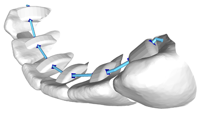
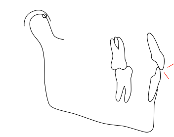

Stability matters.
Keep your teeth straight forever.
There is a lot of effort and expense to create a smile. So, it's heart breaking to learn that so many people allow their teeth to relapse.
Why does this happen? Retainers are not worn often enough or long enough. The good news is - its totally preventable.

The ultimate retainer solution.
To create 'long term' stability you must hold the teeth very consistently in their new positions for about two years. That means you're wearing retainers all day and all night, every day, for two years. And you must remove them to eat and drink, and clean them. It gets really old, really fast. So most people slack off and fall way short of the two year minimum. No surprise.
Thankfully, there's a better way.
The first critical factor in creating long term stability is holding the teeth "consistently" for the first two years after treatment. And a serious problem is encountered with removable retainers. To achieve stability requires that a retainer is being worn 24/7 with very few exceptions. And that's a VERY tall order for the vast majority of people. Why? Wearing removable retainers is a huge hassle. You have to remove them to eat. They're bulky and make you lisp. You have to clean them constantly. And, they are constantly being lost - which adds even more to the expense. Only the most disciplined people will be able to do this correctly. And if something only works for a small percentage of people, we can conclude that it is 'effectively' NOT effective. Removable retainers just don't work. Period.
OrthoCure provides a the ultimate retainer solution.
Fortunately, there is a VERY GOOD solution that's proven to work. Fixed retainers (as opposed to removable retainers) eliminate all the hassles and discomfort of removable retainers and, since they're not removable, they work beautifully. Done correctly, and done well, they are far more comfortable - so comfortable, in fact, that you won't even notice them.
Problem is... very few doctors recommend them. Why? Traditionally, a fixed retainer requires more work by the doctor and, therefore, it adds 10-15% to the cost of treatment (but so does lost retainers). So, removable retainers are the easier option for the doctors. But now, there's a NEW fixed retainer. Keep reading.
It's a first in the dental world. An active appliance you can keep as a retainer too.
Orthocure appliances can remain as the fixed retainer! This means there is no added chair-time for the doctor to install a fixed retainer - it's already there and, therefore, there is no added expense either. So, now there are no more excuses.
After two years have passed with your Orthocure appliances, now you have two options. One, keep'em - those fixed retainers. As long as your hygiene is good, there's no reason to remove them. Two, remove the fixed retainers and replace them with removable retainers that only require NIGHT-TIME wear.
But of course, this assume that your bite was corrected properly.
No 'retainer' can work if your bite relationship is not properly corrected.
Fact is, if the bite is not right (and it's not in MOST cases), you won't get to keep your beautiful smile for very long. Relapse is very common - but it doesn't have to be that way. The goal of any treatment should include a plan for STABILITY. And, that doesn't just mean telling someone to wear their retainer. It means fixing the bite too.
For all you clear aligner fans out there, this is one of the MAIN reasons that so many orthodontists will not use clear aligners for all but the simplest of cases. Because you can't fix the bite when your biting on plastic 24/7 ! Clear aligners actually INHIBIT and PREVENT fixing the bite.
With clear aligners, you can't fix the bite.
Now, it's no secret that if you want to really make someone miserable, do something to mess up their bite. Few things in life are so persistently annoying and painful and prevent you from enjoying the simplest of the pleasure like eating, drinking or sleeping. You just can't underestimate how important it is.
So how does the bite relationship cause relapse or instability?
Some folks find good doctor's who do great work. They fix the bite properly even though its really hard work. But then some of us are not so lucky, and our doctors' don't put the effort in...... and so its FREMITUS for the rest of us. I know it's a funny word...nonetheless important.

What the heck is fremitus?
What is fremitus? It's what happens when you bite all your teeth together into that one position where they all seem to fit, except that some teeth (one or more) make contact before all the rest and, as your jaw closes down further this tooth (or these teeth) is DISPLACED until your jaw is fully closed. Doesn't sound too good does it? It's not.
If there is anything good or positive about this, it would be that fremitus rarely hurts. But all this really means is that you DON'T KNOW about it. And, alas, that's why so many treatments are finished without correcting it. It's just so dang convenient to ignore it.
But, just because it doesn't hurt doesn't mean it's not a problem. What's going to happen in the long run?
In the end, the bite ALWAYS wins.
First let's consider overall stability. You started treatment with a mouth full of teeth that were NOT mobile. Now you have teeth that ARE mobile. Is that a stable outcome? Of course not. But what's equally concerning is how these teeth are EVER going to become stable. Because this problem will get worse before it gets better. As time goes by the jaw will tend to close a bit more (fractions of a millimeter yet still significant) and make it worse. Moreover, because these teeth are getting 'pushed around', the only stabile position they'll ever find is when you stop wearing your retainer and allow them to MOVE out of alignment to a position where your bite wants to push them. Now they're stabile... but mal-aligned again....ugh. The bite always wins in the end. This is why it's so important. You can't fight the bite. Your doctor has to put teeth where they can live peacefully without getting pushed around. But it's not always easy.
...these teeth will remain mobile indefinitely since they are subject to CHRONIC trauma.
Second, we must consider what happens if you do keep wearing your retainer at night for ever and the teeth continue to be impacted by your bite. By the way, the retainer won't help stabilize these teeth. It's not nearly strong enough to over power your bite. So what happens is that these teeth will remain mobile indefinitely since they are subject to CHRONIC trauma. And this is just not sustainable. Eventually the underlying inflammation will cause destruction of the supporting tissues (gums and bone) and some type of intervention will be required to save these teeth. And while all this destructive stuff is going on, you won't feel a thing. That's what chronic means.
So you know at least part of the story about why the bite is so important. And when we talk about the speed of treatment the conversation must begin with the level of quality that we aspire to. If we do not aspire to fix the bite properly and try to get by with leaving some degree of fremitus, then ALL treatments could be REALLy speedy. But if you aspire to keep your smile and your teeth for a long time, invest a little in making sure you get the highest quality outcome. In fact, with OrthoCure you don't even need much investment at all because most of the issues that lead to bite problems are automatically solved. Accuracy and precision solve many, many orthodontic problems by preventing them in the first place. Ask your doctor about OrthoCure.
First, many patient's are told to wear their retainers 'full time' for the first year and then wear it 'just at night' after that. But that's just not enough. Two years of full time wear is the minimum.
Second, patients tend to NOT wear their retainers often enough (hours per day) or long enough (24 months of full time wear at minimum). Third, very few doctors properly correct the bite relationship. Now let's examine each one of these in more detail.
How long do we need to wear retainers? First thing to understand is that RETENTION is forever. This means that there is never of point at which we can say FOR SURE that your teeth won't move out of line. However, the more time that passes, the less chance there is of any movement and the less severe any movement will be.
Ok, retainers are forever, so that's really bad news right? Well.....no, not really. There are ways to make this a very managable endeavor - keep reading (see the rest of this post).